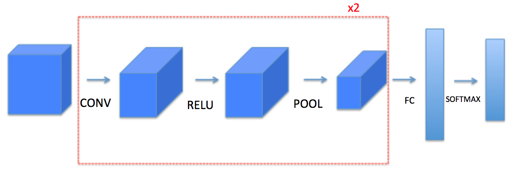
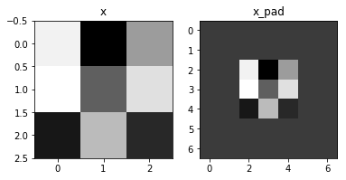
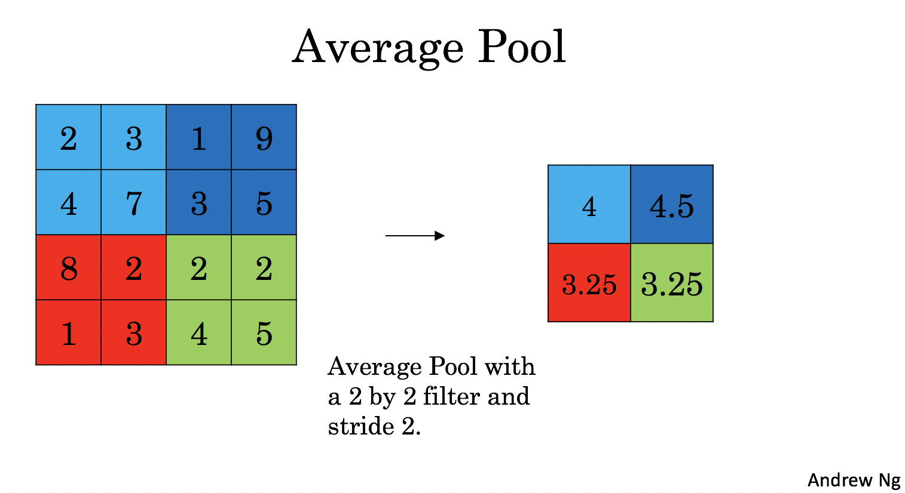

＃ 卷积神经网络：逐步实现
欢迎来到课程4的第一项任务！在这个任务中，您将以numpy实现卷积（CONV）和池（POOL）层，包括向前传播和（可选）向后传播。
Notation:
- 上标
$ [l] $表示$ l ^ {th} $图层的一个对象。- 示例：
$ a ^ {[4]} $是$ 4 ^ {th} $层激活。$ W ^ {[5]} $和$ b ^ {[5]} $是$ 5 ^ {th} $层参数。
- 示例：
- 上标
$（i）$表示来自$ i ^ {th} $示例的对象。- 示例：
$ x ^ {（i）} $是$ i ^ {th} $训练示例输入。
- 示例：
- 下标
$ i $表示向量的$ i ^ {th} $条目。
例如：$ a ^ {[l]} _ i $表示层$ l $中激活的$ i ^ {th} $条目，假设这是一个完全连接（FC）层。
$ n_H $，$ n_W $和$ n_C $分别表示给定层的高度，宽度和通道数量。如果你想引用一个特定的图层$ l $，你也可以编写$ n_H ^ {[l]} $，$ n_W ^ {[l]} $，$ n_C ^ {[l]} $。$ n_ {H_ {prev}} $，$ n_ {W_ {prev}} $和$ n_ {C_ {prev}} $分别表示上一层的高度，宽度和通道数量。如果引用特定层$ l $，这也可以表示为$ n_H ^ {[l-1]} $，$ n_W ^ {[l-1]} $，$ n_C ^ {[l-1]} $
1 - Packages
首先导入您在此作业期间需要的所有软件包。
- numpy i是用Python进行科学计算的基础包。
- matplotlib 是一个用Python绘制图表的库。
- np.random.seed（1）用于保持所有随机函数调用一致。它会帮助我们为你的工作评分。
1 | import numpy as np |
d:\mysites\deeplearning.ai-master\.env\lib\site-packages\h5py\__init__.py:36: FutureWarning: Conversion of the second argument of issubdtype from `float` to `np.floating` is deprecated. In future, it will be treated as `np.float64 == np.dtype(float).type`.
from ._conv import register_converters as _register_converters
2 - Outline of the Assignment
您将实现卷积神经网络的基本模块！您将实现的每个功能都将有详细的说明，以引导您完成所需的步骤：
- Convolution functions, including:
- Zero Padding
- Convolve window
- Convolution forward
- Convolution backward (optional)
- Pooling functions, including:
- Pooling forward
- Create mask
- Distribute value
- Pooling backward (optional)
这个笔记将要求你在numpy上从头开始实现这些功能。在下一个笔记本，您将使用这些函数的TensorFlow等价物来构建以下模型：

注意对于每个前向函数，都有相应的后向等值。因此，在您的前向模块的每一步中，您都将一些参数存储在缓存中。这些参数将用于计算反向传播期间的梯度。
3 - Convolutional Neural Networks
尽管编程框架使卷积易于使用，但它们仍然是深度学习中难理解的概念之一。卷积层将输入转换为不同大小的输出，如下所示。

在这部分中，您将构建卷积图层的每一步。您将首先实现两个辅助函数：一个用于零填充(zero padding)，另一个用于计算卷积函数本身。
3.1 - Zero-Padding
零填充在图像的边界周围添加零点：

Image (3 channels, RGB) with a padding of 2.
填充的主要好处如下：
它允许您使用CONV层，而不必缩小卷的高度和宽度。这对于建立更深的网络非常重要，否则当你走向更深层时，高度/宽度会缩小。一个重要的特例是“相同”卷积，其中高度/宽度在一层之后被完全保留。
它可以帮助我们在图像边界保留更多信息。如果没有填充，下一层的极少数值将受到像素边缘的影响。
练习：实现以下功能，将一批示例数据集X中的所有图像填充为零。Use np.pad. 注意，如果你想为形状为$（5,5,5,5,5）$
1 | # GRADED FUNCTION: zero_pad |
1 | np.random.seed(1) |
x.shape = (4, 3, 3, 2)
x_pad.shape = (4, 7, 7, 2)
x[1,1] = [[ 0.90085595 -0.68372786]
[-0.12289023 -0.93576943]
[-0.26788808 0.53035547]]
x_pad[1,1] = [[0. 0.]
[0. 0.]
[0. 0.]
[0. 0.]
[0. 0.]
[0. 0.]
[0. 0.]]
<matplotlib.image.AxesImage at 0x1d31decada0>

Expected Output:
x.shape: | (4, 3, 3, 2) |
x_pad.shape: | (4, 7, 7, 2) |
x[1,1]: | [[ 0.90085595 -0.68372786] [-0.12289023 -0.93576943] [-0.26788808 0.53035547]] |
x_pad[1,1]: | [[ 0. 0.] [ 0. 0.] [ 0. 0.] [ 0. 0.] [ 0. 0.] [ 0. 0.] [ 0. 0.]] |
3.2 - Single step of convolution
在这一部分中，实现一个卷积层，在该步骤中将滤波器应用于输入的单个位置。以下步骤被用来构建一个卷积单元，其中：
- Takes an input volume
- Applies a filter at every position of the input
- Outputs another volume (usually of different size)

with a filter of 2x2 and a stride of 1 (stride = amount you move the window each time you slide)
在计算机视觉应用中，左侧矩阵中的每个值对应一个像素值，我们通过将其值与原始矩阵元素化相乘，然后对它们进行求和并添加偏差，从而将3x3滤波器与图像进行卷积。在练习的第一步中，您将实现一个卷积步骤，对应于将滤波器应用于其中一个位置以获得单个实值输出。
Later in this notebook, you’ll apply this function to multiple positions of the input to implement the full convolutional operation.
Exercise: Implement conv_single_step(). Hint.
1 | # GRADED FUNCTION: conv_single_step |
1 | np.random.seed(1) |
Z = -6.999089450680221
Expected Output:
Z | -6.99908945068 |
3.3 - Convolutional Neural Networks - 正向传播
在正向传播中，您将采取多种滤波器并将它们在输入上进行卷积。每个’卷积’给你一个2D矩阵输出。然后您将堆叠这些输出以获得3D结构：
练习：执行下面的函数以在输入激活A_prev上卷积滤波器W.该函数以A_prev作为输入，前一层（对于一批m个输入），F个滤波器/权重W以及一个由b表示的偏差向量输出的激活，其中每个滤波器具有其自己的（单个）偏差。最后，您还可以使用stride和pad等超参数。
Hint:
- 要选择矩阵“a_prev”（形状（5,5,3））左上角的2x2切片，您可以:
1
a_slice_prev = a_prev[0:2,0:2,:]
当你在下面定义a_slice_prev时，这会很有用，使用你将要定义的start / end索引。
2.要定义a_slice，您需要首先定义它的顶点vert_start，vert_end，horiz_start和horiz_end。这个数字可能有助于您找到如何在下面的代码中使用h，w，f和s来定义每个角点。

This figure shows only a single channel.
Reminder:
卷积的输出形状与输入形状的公式是：$$ n_H = \lfloor \frac{n_{H_{prev}} - f + 2 \times pad}{stride} \rfloor +1 $$$$ n_W = \lfloor \frac{n_{W_{prev}} - f + 2 \times pad}{stride} \rfloor +1 $$$$ n_C = \text{number of filters used in the convolution}$$
1 |
|
1 | np.random.seed(1) |
Z's mean = 0.004786321537477471
Z[3,2,1] = [ 0.10709871 -0.03102354 -0.52995452 0.98611224 0.65733641 -0.84239368
-0.04608241 0.08802027]
cache_conv[0][1][2][3] = [-0.20075807 0.18656139 0.41005165]
(10, 4, 4, 8)
期望结果:
Z’s mean | 0.0489952035289 |
Z[3,2,1] | [-0.61490741 -6.7439236 -2.55153897 1.75698377 3.56208902 0.53036437 5.18531798 8.75898442] |
cache_conv[0][1][2][3] | [-0.20075807 0.18656139 0.41005165] |
最后，CONV层还应包含激活，在这种情况下，我们将添加以下代码行：
1 | # Convolve the window to get back one output neuron |
你不需要在这里做。
4 - Pooling layer
池（POOL）层减少输入的高度和宽度。它有助于减少计算量，并有助于使特征检测器的输入位置更加稳定。这两种池化层是：
最大池化层：在输入上滑动（
$ f，f $）窗口并将窗口的最大值存储在输出中。平均池图层：在输入上滑动（
$ f，f $）窗口并在输出中存储窗口的平均值。
 |  |
这些汇聚层没有反向传播训练的参数。但是，它们具有超参数，如窗口大小$ f $
1 | # GRADED FUNCTION: pool_forward |
1 | np.random.seed(1) |
mode = max
A = [[[[1.62434536 0.86540763 2.18557541]]]
[[[1.62434536 0.86540763 2.18557541]]]]
mode = average
A = [[[[ 0.24481813 -0.47568152 0.3263877 ]]]
[[[ 0.24481813 -0.47568152 0.3263877 ]]]]
期望输出:
A = | [[[[ 1.74481176 0.86540763 1.13376944]]] [[[ 1.13162939 1.51981682 2.18557541]]]] |
A = | [[[[ 0.02105773 -0.20328806 -0.40389855]]] [[[-0.22154621 0.51716526 0.48155844]]]] |
恭喜！您现在已经实现了卷积网络所有层的前向传递。
5 - 卷积神经网络中的反向传播
在现代的深度学习框架中，您只需要实现正向传播，而框架负责反向传播，所以大多数深度学习工程师不需要考虑反向传播的细节。卷积网络的反向传递很复杂。然而，如果你愿意，你可以通过的这个可选部分来了解卷积网络中的backprop。
在之前的课程中，您实现了一个简单的（完全连接的）神经网络，您使用反向传播来计算更新loss函数参数的导数。同样，在卷积神经网络中，您可以根据loss函数计算导数以更新参数。反向传播方程不是微不足道的，我们没有在讲座中推导它们，但我们在下面简要地介绍了它们。
5.1 - 卷积层反向传播
我们首先实现一个CONV层的反向传播。
5.1.1 - Computing dA:
这是计算$ dA $相对于特定过滤器$ W_c $和给定训练示例的loss的公式：
$$ dA += \sum _{h=0} ^{n_H} \sum_{w=0} ^{n_W} W_c \times dZ_{hw} \tag{1}$$
其中$ W_c $是一个过滤器，$ dZ_ {hw} $是一个标量，对应于第h行和第w列的conv层Z输出的成本梯度（对应于在第步走，j步走下）。请注意，在每次更新dA时，我们都会将相同的过滤器$ W_c $乘以不同的dZ。我们这样做主要是因为在计算正向传播时，每个过滤器都被不同的a_slice点分和相加。因此，在计算dA的backprop时，我们只是添加所有a_slices的渐变。
In code, inside the appropriate for-loops, this formula translates into:1
da_prev_pad[vert_start:vert_end, horiz_start:horiz_end, :] += W[:,:,:,c] * dZ[i, h, w, c]
5.1.2 - Computing dW:
这是计算$ dW_c $（$ dW_c $是一个滤波器的导数）相对于损失的公式：
$$ dW_c += \sum _{h=0} ^{n_H} \sum_{w=0} ^ {n_W} a_{slice} \times dZ_{hw} \tag{2}$$
$ a_ {slice} $对应于用于生成活动$ $ {ij} $的切片。因此，这最终为我们提供了相对于该切片的$ W $的渐变。既然它是相同的$ W $，我们将只加起来所有这样的渐变来获得$ dW `$。
在代码中，在适当的for循环中，该公式转换为：1
dW[:,:,:,c] += a_slice * dZ[i, h, w, c]
5.1.3 - Computing db:
这是计算$db$相对于特定过滤器$W_c$的成本的公式：
$$ db = \sum_h \sum_w dZ_{hw} \tag{3}$$
1 | def conv_backward(dZ, cache): |
1 | np.random.seed(1) |
dA_mean = -0.775945386961
dW_mean = 2.74605132882
db_mean = 0.765811445996
Expected Output:
dA_mean | 1.45243777754 |
dW_mean | 1.72699145831 |
db_mean | 7.83923256462 |
5.2 Pooling layer - backward pass
接下来，我们从MAX-POOL层开始实现池化层的反向传递。即使pooling层没有backprop更新的参数，您仍然需要通过pooling层反向传播梯度，以便为在pooling层之前出现的图层计算梯度。
5.2.1 Max pooling - backward pass
在跳转到pooling层的反向传播之前，您将构建一个名为create_mask_from_window（）的辅助函数，它执行以下操作：
$$ X = \begin{bmatrix}
1 && 3 \\
4 && 2
\end{bmatrix} \quad \rightarrow \quad M =\begin{bmatrix}
0 && 0 \\
1 && 0
\end{bmatrix}\tag{4}$$
1 | def create_mask_from_window(x): |
1 | np.random.seed(1) |
x = [[ 1.62434536 -0.61175641 -0.52817175]
[-1.07296862 0.86540763 -2.3015387 ]]
mask = [[ True False False]
[False False False]]
Expected Output:
x = | [[ 1.62434536 -0.61175641 -0.52817175] [-1.07296862 0.86540763 -2.3015387 ]] |
mask = | [[ True False False] [False False False]] |
为什么我们要跟踪最大值的位置？这是因为这是最终影响产出的输入值，最终影响到loss。 Backprop计算loss的梯度，因此任何影响最终loss的因素都应该具有非零的梯度。因此，backprop会将梯度“传播”回到影响成本的特定输入值。
5.2.2 - Average pooling - backward pass
在max pooling中，对于每个输入窗口，输出上的所有“影响”都来自单个输入值 - 最大值。在average pooling中，输入窗口的每个元素对输出都有相同的影响。所以要实现backprop，你现在要实现一个反映这个的辅助函数。
例如，如果我们使用2x2过滤器在正向传球中进行了平均池化(average pooling)，那么您将用于反向传播的蒙版将如下所示：$$ dZ = 1 \quad \rightarrow \quad dZ =\begin{bmatrix}
1/4 && 1/4 \\
1/4 && 1/4
\end{bmatrix}\tag{5}$$
1 | def distribute_value(dz, shape): |
1 | a = distribute_value(2, (2,2)) |
distributed value = [[ 0.5 0.5]
[ 0.5 0.5]]
Expected Output:
distributed_value = | [[ 0.5 0.5] [ 0.5 0.5]] |
5.2.3 Putting it together: Pooling backward
您现在拥有了在池化层上计算反向传播所需的所有内容。
练习：在两种模式下实现pool_backward函数（“max”和“average”）。您将再次使用4个循环（遍历训练样例，高度，宽度和通道）。你应该使用if / elif语句来查看模式是否等于'max'或'average'。如果它等于“average”，则应使用上面实现的distribute_value（）函数来创建一个与a_slice具有相同形状的矩阵。否则，模式等于’max’，您将使用create_mask_from_window（）创建一个蒙版并将其乘以相应的dZ值。
1 | def pool_backward(dA, cache, mode = "max"): |
1 | np.random.seed(1) |
mode = max
mean of dA = 0.145713902729
dA_prev[1,1] = [[ 0. 0. ]
[ 10.11330283 -0.49726956]
[ 0. 0. ]]
mode = average
mean of dA = 0.145713902729
dA_prev[1,1] = [[ 2.59843096 -0.27835778]
[ 7.96018612 -1.95394424]
[ 5.36175516 -1.67558646]]
Expected Output:
mode = max:
mean of dA = | 0.145713902729 |
dA_prev[1,1] = | [[ 0. 0. ] [ 5.05844394 -1.68282702] [ 0. 0. ]] |
mode = average
mean of dA = | 0.145713902729 |
dA_prev[1,1] = | [[ 0.08485462 0.2787552 ] [ 1.26461098 -0.25749373] [ 1.17975636 -0.53624893]] |
Congratulations !
恭喜完成这项任务。您现在了解了卷积神经网络的工作原理。您已经实现了神经网络的所有构建模块。在下一个作业中，您将使用TensorFlow实施一个ConvNet。